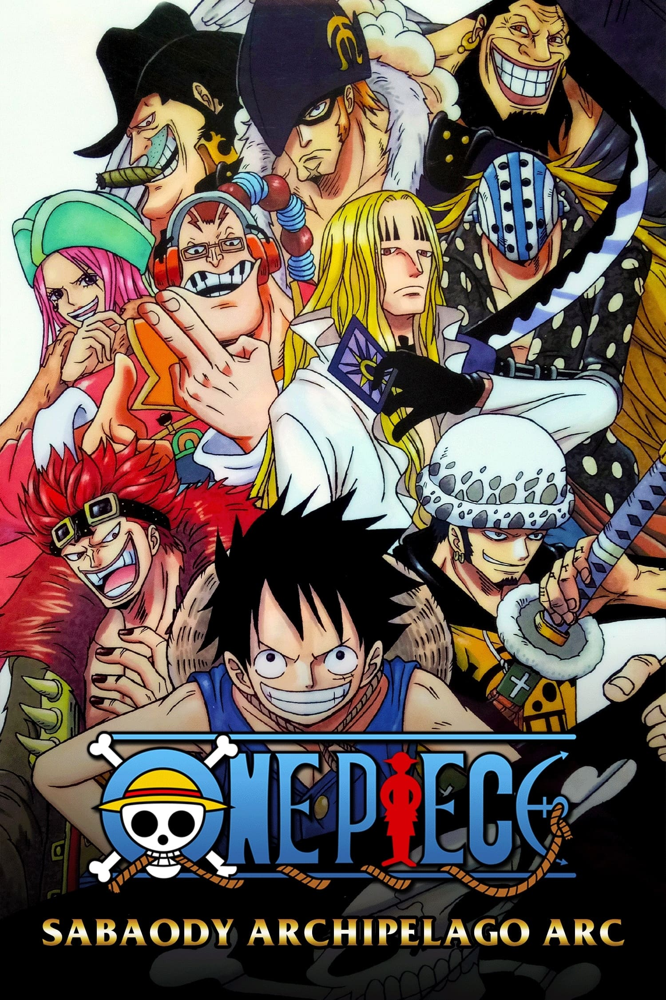

The Straw Hat Pirates arrive at the final island of the Grand Line's first half, Sabaody Archipelago. While searching for a means to pass under the Red Line into the New World, they come into conflict with a deadly slave trading ring that sells to the World Nobles. Luffy and Zoro are labelled as two of the Eleven Supernovas, rookies of significant bounties who have simultaneously arrived at the archipelago. A chain reaction of events engulfs the archipelago in chaos, and the Straw Hats are faced with their greatest challenge yet.
The Islands of Bubbles and Nobles
The crew arrive at Sabaody (after Pappag and Camie explain to them about the two ways of getting to the New World: requesting permission from the government and passing through Mary Geoise or going through Fish-Man Island), and are amazed at its structure (large trees, blowing bubbles). Hatchan then says they will need a special coating to make sure the ship gets to Fish-Man Island all right. Hatchan promises to take them to a mechanic he would "bet his life on", but they have to promise not to oppose the World Nobles, people who are allowed to live in Mary Geoise and are sometimes seen walking around Sabaody, even if someone were to be killed before their very eyes.
Usopp, Franky and Sanji stay on the Sunny to fix the damages to the ship (or in Sanji's case to look after the treasure at the behest of Nami) while the others explore the island. Zoro is the last to leave much to the shock of the others as they know of his lack of direction. But Zoro points out he just has to look at the numbers on the grove trees to remember where they are docked at, and to ask directions if his gets lost. The three agree to this though tell him not to trust himself while he remembers the number of the grove as "1". However, a bubble had floated in the way at the time revealing the grove to actually be "41".
No sooner than they leave the group, a Pirate Captain runs through the town, begging the citizens to remove a collar from his neck. He pleas that he's given up on the new world and just wants to leave, even claiming he has a wife and child, the latter whose never even seen him since he was a baby. Hatchan, however, tells the group not to help him as he is a slave of the World Nobles. After mentioning this fact, the collar activates and blows up the Captain though he surprisingly survives still feebly begging to leave while a shadowed figure holding an axe and bounty poster identifies the Captain from above a building. Two nobles, Rosward and his daughter, Shalria, show up afterwards causing everyone to bow as they pass. After their dog urinates on the charred Captain, Shalria kicks him before shooting him with a pistol, Luffy nearly attacks them after seeing this, but Hatchan stops him. Rosward and she then casually walk away talking buying another slave.
The group then talks about the oddity of it since the pirate looked strong enough to deal with both nobles. But Pappag comments that wounding one would make the offender the target of one the Admirals. When asked what gives the nobles such special treatment, the starfish tells them that they are the descendants of the ones that created the World Government, and due to this they have become abusive with their influence.
The Eleven Supernovas
Upon entering, they meet the owner of the bar Shakuyaku (Shakky for short), a former pirate and friend of Hatchan. After the usual meet and greet, Shakky reveals she has been following the Straw Hats' exploits and that she was even chased by Garp during her pirate career. When asked about the engineer Rayleigh, Shakky tells them he is not there though has not left the island. When Luffy suggest waiting for him, she reveals that he has not been back in a half a year pretty much wandering the island's bars and casinos. Hearing this, the group agree on searching for him to which Shakky warns them to be careful in doing so, as since the Straw Hats arrival, that now makes eleven rookie pirates with over Beli100,000,000 bounties on them that have reached the Red Line, Luffy being the second highest of the ranks in terms of bounties.
Most of the Supernovas are staying in Grove 24. First off comes Capone "Gang" Bege (Beli138,000,000), a mafia type pirate who is dining at a restaurant and complaining of the food. When one of his crew tries to warn him of the Marines, he attacks him with a fork. Then "Big Eater" Jewelry Bonney (Beli140,000,000), who's in the same restaurant, is living up to her title by eating an enormous amount of food and demanding more of it despite the cooks going as fast as they can. There is also "The Magician" Basil Hawkins (Beli249,000,000), who tells a pirate who got spaghetti spilled on him that it's an unlucky day for him. In another section of the grove, two of the rookies Eustass "Captain" Kid (Beli315,000,000) and "Roar of the Sea" Scratchmen Apoo (Beli198,000,000) are fighting against one another.
Shakky tells them all the pirates beyond this point are the best of the best. She also reveals that Kid only has a higher bounty than Luffy himself because he caused damage to civilians and that she's rooting for the Straw Hats. Even after hearing this, Luffy responds that he will just relax for the time being but is a bit worried for the engineer. However, Shakky tells him Rayleigh will be fine because he's far stronger than the rookies.
The Straw Hat Pirates: Conquered and Divided
After the battle, the Straw Hats are completely wiped, having had to use all their strength just to fight the Kuma. They soon start to discuss what to do next when someone calls out to them. Out from the sky drops the axe-wielding figure, along with yet another Kuma cyborg, in the middle of the Straw Hats. The figure introduces himself as Sentomaru and the Kuma clone known as a Pacifista, PX-1 (the one the Straw Hats defeated was PX-4).
Usopp tries to cover their escape with a Hissatsu Kemuri Boshi. But PX-1 blows up a bridge preventing Sanji's group from escaping before appearing right in front of them. Sentomaru goes for Luffy's group prompting Luffy to try to Gatling him. Sentomaru easily deflects the attack with his palms and sends him flying much to Luffy's shock. Sentomaru then hits him again and knocks Luffy into a tree, managing to actually hurt him as the Marine reveals he not a Devil Fruit user. An explosion nearby halts the fight, which Luffy notices it came from where Zoro's group ran.
However, none of their attacks work since, as Kizaru reveals, he ate the Pika Pika no mi (Light Light) Fruit, a Logia-type that essentially makes him a light man. Kizaru then goes to finish Zoro off, but the attack is suddenly thwarted by Rayleigh's intervention who manages to kick Kizaru's leg and divert the light attack. Kizaru greets the "Dark King" while Rayleigh tells him not to pluck the fine sprouts (i.e, the Straw Hats) since their era is just beginning.
Afterwards, Luffy orders for everyone to concentrate on running away, telling them they cannot fight. They all start to run, with Franky using a Coup de Vent to distance himself, Nami and Sanji from the Pacifista. Kizaru however, heads for Zoro's direction to attack him, but Rayleigh stops him in his tracks, even managing to cut his cheek. Afterwards, The Pacifista begins to attack Zoro, but is temporarily stopped by Sanji and Brook, both of whom are quickly defeated. Luffy is then attacked by Sentomaru and knocked into one of the mangrove trees. Rayleigh and Kizaru begin a sword fight, with Kizaru using a light sword. The Pacifista then attacks Usopp, causing him to drop Zoro. Chopper enters Monster Point to try to help. The Pacifista is stopped from its attack by the real Bartholomew Kuma, who then asks if Zoro were to go on a trip, where would he like to go. Zoro then disappears right in front of Usopp's eyes.
Kuma passes by them and whispers something to Rayleigh prompting him to question what he is doing. Kizaru inquires as well but Kuma brushes him off. Luffy then enters Gear 2, Kuma ignores him and goes for Franky and Nami. Franky launches a Strong Right striking Kuma directly in his face but showed no sign of harm to him. Luffy launches himself at Kuma in Gear 2 with a strong punch, but Kuma catches his fist easily and tosses him side.
Now alone, Luffy loses any remaining will to fight and collapses to the ground in despair. Berating himself for not being able to save even one of his friends. Kuma then appears before Luffy, paw raised, he tells the Captain they will not meet each other again before Luffy too disappears at his touch. A caption then comes up saying that on this day in Grove 12 of the Sabaody Archipelago, the Straw Hats were completely and utterly defeated.